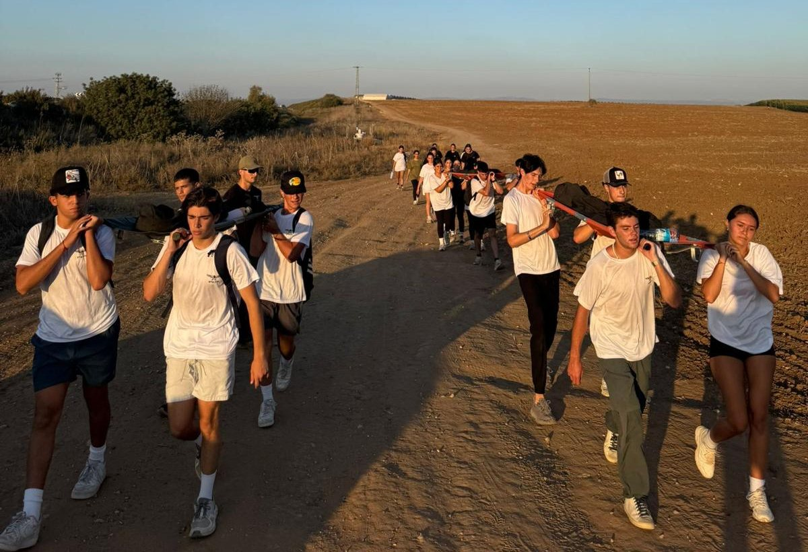

In Gedera, we get to know Liav Aloush's story through the place where he grew up and the community that continues his way. The group will hear about his life and his service as a fighter in the Duvdevan unit, take part in an outdoor team workout suited to its level, and talk about friendship, responsibility and meaningful service.
The activity takes place outdoors in Gedera — the town where Liav grew up and where Tzevet Aloush operates today. It's built for delegations from abroad, Taglit and other Israel trips, pre-military academies, schools and youth movements, and team-building for organizations alike.
A real story that brings identity and belonging to life, beyond a lecture or a museum stop.
A direct look at what military service means in the life of a young Israeli, and how a community responds to loss.
Shared effort that brings participants together — including Israeli Mifgash participants, on trips that include one.
An outdoor team workout suited to the group's level — no prior experience needed.

Liav grew up in Gedera, the son of Mali and Kobi and brother of Amit. He served as a fighter in Team 100 of the IDF's Duvdevan unit, and fell in battle in Khan Yunis, Gaza, ten days before his 22nd birthday.
Liav believed military service is an opportunity, not "three wasted years." In that spirit, Maslul Hadash founded Tzevet Aloush (Team Aloush): a combat-fitness and IDF-preparation group for 10th–12th graders in Gedera, led by Kobi Aloush, Liav's father. Members prepare for IDF tryouts and learn not to give up, friendship and giving back. The team also holds memorial events in Gedera, including an annual fitness championship.
The activity has three connected parts: a story, a physical experience, and a talk about what it all means. The order and difficulty of each part are adjusted to the trip plan and to the group.
Liav's life story told through photos and the team's film, "Meaningful Service in Liav's Way and Spirit," plus a meeting with the family and the memorial team. Who Liav was, what guided him, and how a family and community choose to remember him by doing good for the next generation.
A Tzevet Aloush–style workout: a warm-up, then a set of military-style exercises — carrying stretchers, carrying sandbags and evacuating a wounded soldier. Teamwork is the key, and the tasks are built so that no team finishes without all of its members.
A closing circle: what meaningful IDF service is, why young Israelis choose to give to others, and how each participant can bring the values of determination and friendship back to their own community abroad.
The activity connects to the themes at the heart of many group trips to Israel: identity and connection to the land, getting to know Israeli society, and shared experience between participants.
The true story of a young fighter their age, told by those who knew him, and training on Israeli soil. An experience that stays, not a general talk about war and loss.
A taste of IDF preparation and combat fitness, in a safe setting suited to the group.
A shared effort that brings participants together — including Israeli Mifgash participants, on trips that include one.
Respect, friendship, determination and leadership, as they guided Liav.
What military service means in a young Israeli's life, and how a community turns loss into action.
Every exercise is built so no one finishes alone. Carrying stretchers, carrying sandbags and evacuating a wounded soldier — not just a physical challenge, but real teamwork, in the spirit of Tzevet Aloush's training.

Equipment, logistics and accommodations are all built so the group can focus on the experience itself — no extra worries.
All logistics and training equipment — stretchers, sandbags and training gear — are provided by the Maslul Hadash nonprofit.
Anyone who prefers not to or cannot train takes on other team roles: navigating, leading and cheering. Effort is suited to the group — no experience needed.
Certified trainers, a first-aid kit on site, regular water breaks, and effort adjusted to the weather. The nonprofit has liability insurance.
Liav's story is told with care, focusing on his life and values. It suits all audiences, including people who know little about Israel.
Together with its Tzevet Aloush initiative, Maslul Hadash promotes meaningful IDF service among Israeli youth, and invites groups and delegations from Israel and abroad to connect with the Land of Israel and its people through Liav's story.